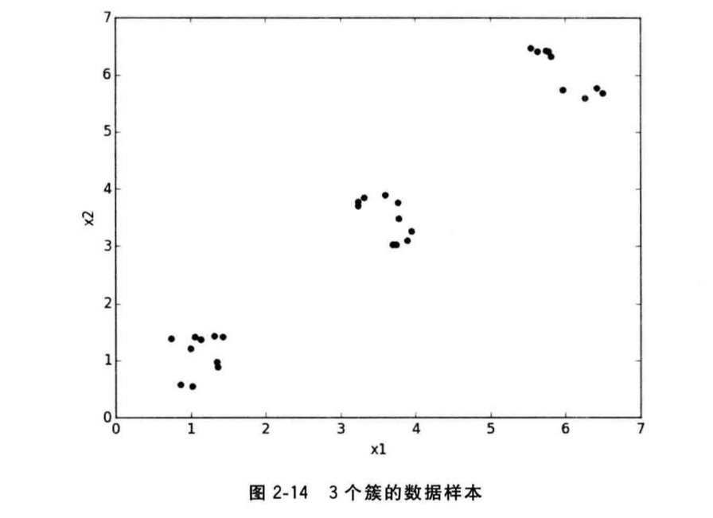

本书是一本机器学习入门书，在不涉及对大量数学模型和复杂编程知识的情况下整合并实践基于python语言的程序库，如scikit-learn、pandas、NLTK、gensim、XGBoost、TensorFlow等，并且介绍了线性分类器、逻辑斯蒂模型、朴素贝叶斯分类器等机器学习经典模型及优化办法，最后介绍了机器学习实战平台kaggle并给出实例。
第一章 简介篇
机器学习综述
如果一个程序在使用既有的经验执行某类任务的过程中被认定为是“具备学习能力的”，那么它一定需要展现出：利用现有的经验，不断改善其完成既定任务的性能的特质
任务
监督学习：关注对事物未知表现的预测
分类问题：对其所在的类别进行预测。类别既是离散的，同时也是预先知道数量的（如根据一个人的身高、体重和三维等数据预测其性别）
回归问题：预测的目标往往是连续的，如根据房屋的面积、地理位置、建筑年代等进行销售价格的预测
无监督学习：倾向于对事物本身特性的分析
数据降维：对事物的特性进行压缩和筛选，如识别图像中人脸的任务通常会对图像进行降维，保留最具有区分度的像素组合
聚类问题：依赖于数据的相似性，把相似的数据样本划分为一个簇（区别于分类在大多数情况下不会预先知道簇的数量和每个簇的具体含义），如电子商务网站根据用户信息和购买行为进行聚类分析，一旦找到数量多且背景相似的客户群，便可以针对他们的兴趣投放广告和促销信息
经验
监督学习：我们拥有的经验包括特征和标记，特征向量描述数据样本，标记的表现形式则取决于监督学习的种类
无监督学习：更加适合对数据结构的分析，数据量大
数据类型：从原始数据到特征向量转化的过程中也会遭遇多种数据类型：类别型是特征、数值型特征、缺失的数据
训练集：既有特征，同时也带有标记的数据集
性能
性能：评价所完成任务质量的指标
测试集：为了评价学习模型完成任务的质量，我们需要具备相同特征的数据，并将模型的预测结果通相对应的正确答案进行比对，这样的数据集成为测试集
指标：分类问题——准确性，回归问题——衡量预测值与实际值之间的偏差大小
模型的参数：分类器需要通过学习从训练数据中得到
python编程库
python用于机器学习的优势
方便调试的解释型语言
跨平台执行作业
广泛的应用编程接口
丰富完备的开源工具包
python编程库
numpy&scipy：提供高级的数学运算机制，高效的向量和矩阵运算功能
matplotlib：数据分析和可视化
scikit-learn：封装了大量经典以及最新的机器学习模型
pandas：便于数据读写、清洗、填充以及分析
Anaconda：集成平台
第二章 基础篇
监督学习经典模型
监督学习的流程
准备训练数据
抽取所需要的特征，形成特征向量
把这些特征向量连同对应的标记/目标一并送入学习算法中，训练出一个预测模型
采用同样的特征抽取方法作用于新测试数据，得到用于测试的特征向量
使用预测模型对这些待测试的特征向量进行预测并得到结果

分类学习
二分类和多分类问题：从两个或多个类别中选择一个作为预测结果
多标签分类问题：判断一个样本是否同时属于多个不同类别
线性分类器（Linear Classifier）
模型介绍：
一种假设特征与分类结果存在线性关系的模型，通过累加计算每个维度的特征与各自权重的乘积来帮助类别决策
逻辑回归模型：
1.任何模型在训练集上的表现都不一定能代表其最终在未知待测数据集上的性能，但至少要先保证模型可以被训练集优化。
2.SGA和SGD都属于梯度法迭代渐进估计参数的过程，梯度上升(SGA)用于目标最大化，梯度下降(SGD)用于目标最小化。
1 | import pandas as pd |
综上，发现，LR比SGDC在测试集上有更高的准确性，因为sklearn中采用解析的方式精确计算LR的参数，而使用梯度法估计SGDC的参数
特点分析：
LR model：精确解析参数，计算时间长但模型性能略高
SGDC model：随机梯度上升算法估计参数，计算时间短但模型性能略低
训练数据规模在10万量级以上的数据，考虑到时间耗用，推荐使用随机梯度算法对模型参数进行估计
sklearn.model_selection.train_test_split解释
from sklearn.cross_validation import train_test_split
一般形式：X_train,X_test, y_train, y_test = cross_validation.train_test_split(train_data,train_target,test_size=0.4, random_state=0)
参数解释：
train_data：所要划分的样本特征集
train_target：所要划分的样本结果
test_size：样本占比，如果是整数的话就是样本的数量
random_state：是随机数的种子
随机数种子：其实就是该组随机数的编号，在需要重复试验的时候，保证得到一组一样的随机数。比如你每次都填1，其他参数一样的情况下你得到的随机数组是一样的。但填0或不填，每次都会不一样。
随机数的产生取决于种子，随机数和种子之间的关系遵从以下两个规则：
种子不同，产生不同的随机数；种子相同，即使实例不同也产生相同的随机数。
混淆矩阵：
二分类任务中，预测结果(predicted condition)与正确标记(true condition)之间存在4种不同的组合：
真阳性(true positive)：预测正确的恶性肿瘤
真阴性
假阳性(false positive)：误判为恶性肿瘤
假阴性
性能评价指标：博客《准确率、精确率、召回率、F1值》
支持向量机（Support Vector Classifier）

模型介绍：
根据训练样本的分布，搜索所有可能的线性分类器中最佳的那个
决定直线位置的样本并不是所有训练数据，而是其中的两个空间间隔最小的两个不同类别的数据点，这种可以用来真正帮助决策最优线性分类模型的数据点叫做“支持向量”
逻辑斯蒂回归模型在训练过程中由于考虑了所有训练样本对参数的影响，因此不一定获得最佳的分类器
1.不是在所有数据集上SVM的表现一定都优于普通线性模型或其他模型，而是假设未知待测数据也如训练数据一样分布，则SVM可帮助找到最佳分类器；实际应用数据总是有偏差的。
2.上图，H1表现不佳（有分类错误）；H2与H3都表现完美。
3.但，分类模型的选取中我们需要更加关注如何最大限度为未知分布的数据集提供足够的待预测空间。如有一个黑色样本稍偏离H2，则会很可能被误判为白色，造成误差，而H3则可为样本提供更多的容忍度，故H3优于H2.
多分类：判断一个样本是否同时属于多个不同类别；将多分类看成N个二分类任务。
如本例的分类目标有10个类别，即0—9这10个数字，因此无法直接计算三指标。故我们逐一评估每个类别的这三指标，把所有其他类别统一看做阴性(负)样本，则创造了10个二分类任务。
特点分析：
可帮助在海量甚至高维度数据中筛选对预测任务最有效的少数训练样本，节省数据内存，提高模型预测性能
但计算代价高（CPU资源与计算时间）
朴素贝叶斯（Naive Bayes）
模型介绍：
会单独考量每一维度特征被分类的条件概率，进而综合这些概率并对其所在的特征向量做出分类预测
基本数学假设：各个维度上的特征被分类的条件概率之间是相互独立的
特点分析：
朴素贝叶斯模型广泛应用在互联网文本分类任务
优点：由于其较强的特征条件独立假设，使得模型预测所需估计的参数规模从幂指数量级向线性量级减少，极大节约内存消耗和计算时间
缺点：同样由于这种强假设的限制，模型训练时无法将各个特征之间的联系考量在内，使该模型在其他数据特征关联性强的分类任务上性能不佳
K近邻（K-Nearest Neighbor，KNN）
模型介绍：
最简单的ML算法之一
假设有一些携带分类标记的训练样本，分布于特征空间中；蓝色、绿色样本点各自代表其类别；对一个待分类的红色测试样本点，未知其类别，按照“近朱者赤近墨者黑”的说法，我们需要寻找与这个待分类的样本在特征空间中距离最近的K个已标记样本作为参考，来帮助做出分类决策
思路:如果一个样本在特征空间中的k个最相似(即特征空间中最邻近)的样本中的大多数属于某一个类别，则该样本也属于这个类别。
特点分析：
k近邻算法是非常直观简单的模型
是无参数模型：没有参数训练过程，即未通过任何学习算法分析数据，而只是根据测试样本在训练数据中的分布做出分类
缺点：高计算复杂度和内存消耗；平方级别的算法复杂度（每处理一个测试样本就要对所有训练样本进行遍历，逐一计算相似度、排序且选取K个最近邻训练样本的标记，进而做出分类决策）
当然也有KD-Tree这样的数据结构通过“空间换时间”思想节省KNN的决策时间
决策树（Decision Tree）
模型介绍：
- 描述非线性关系
LR和SVM都要求被学习的数据特征和目标之间遵照线性假设，但现实场景下这种假设不存在。如用年龄预测流感死亡率，年龄与死亡率之间不存在线性关系。
决策树节点(node)——数据特征
各节点下的分支——特征值的分类
决策树的所有叶子节点——显示模型的决策结果
使用多种不同特征组合搭建多层决策树时，需考虑特征节点的选取顺序，常用的度量方式有信息熵(Information Gain)和基尼不纯性(Gini Impurity)
集成模型（Ensemble）
模型介绍：
综合考量多个分类器的预测结果，从而做出分类决策，综合考量方式有2种：
1.利用相同的训练数据同时搭建多个独立的分类模型，然后通过投票以少数服从多数的原则做出最终分类决策，如：
随机森林分类器(Random Forest Classifier)：在相同训练数据上同时搭建多棵决策树（每棵树都随机选取特征）
2.按照一定词序搭建多个分类模型，模型间彼此存在依赖关系（每个后续模型的加入都需要对现有集成模型的综合性能有所贡献，进而不断提升更新过后的集成模型的性能，并最终期望借助整合多个分类能力较弱的分类器，搭建出具有更强分类能力的模型），如:
梯度提升决策树(Gradient Tree Boosting)：每棵树在生成过程中都会尽可能降低整体集成模型在训练集上的拟合误差
特点分析：
最常见的应用；可整合多种模型
缺点：模型估计参数的过程受概率影响，具有不确定性
优点：虽然模型训练需要耗费更多时间，但得到的综合模型会具有更高的性能和稳定性
回归预测
线性回归器
模型介绍：
最小二乘法：数学优化方法；通过最小化误差的平方和寻找数据的最佳函数匹配。利用最小二乘法可以简便地求得未知的数据，并使得这些求得的数据与实际数据之间误差的平方和为最小。
线性回归问题中：优化目标即最小化预测结果与真实值之间的差异（因为预测目标直接是实数域上的数值）
当使用一组m个用于训练的特征向量$X=$ 和其对应的回归目标$y=$ 时，我们希望线性回归模型可以最小二乘(Generalized Least Squares)预测的损失$L(w,b)$ ，则线性回归器的常见优化目标为：*
同样为学习到决定模型的参数$w，b$ ，仍可使用一种精确计算的解析算法和一种快速的随机梯度下降(Stochastic Gradient Descend)估计算法.
性能评估指标：
假设测试数据有m个目标数值$y= $ 且记$\overline{y}$ 为回归模型的预测结果，则：
MAE（平均绝对误差）：
$SS{abs}=\sum{m}^{i=1}\qquad|y^i-\overline{y}|$ ,$
$MAE=\frac{SS_{abs}}{m}$
MSE（均方误差）：
$SS{tot}=\sum{m}^{i=1}\qquad(y^i-\overline{y})^2$
Missing close brace MSE=\frac{SS_{tot}{m}
R-squared（R平方）：
$SS{res}=\sum{m}^{i=1}\qquad(y^i-(f(x^i))^2$
Missing close braceR^2=1-\frac{SS_{res}{tot}
其中，$SS{tot}$ 代表测试数据真实值的方差(内部差异)；$SS{res}$ 代表回归值与真实值之阿金的平方差异（回归差异）
R-squared（拟合度）：比较预测结果与真实值的吻合程度，既考量了回归值与真实值的差异，又兼顾了问题本身真实值的变动；而MAE、MSE(差值的绝对值或平方)则会随不同预测问题而变化巨大，欠缺在不同问题中的可比性
使用三种回归评价机制和两种调用R-squared评价模块的方法，评价此模型的回归性能
| 1234567891011121314151617181920212223242526 | # 使用LR模型自带的评估模块print ‘The value of default measurement of LR is’,lr.score(X_test,y_test) # 导入MAE和MSE评估回归模型from sklearn.metrics import r2_score,mean_squared_error,mean_absolute_error # 使用r2_score模块print ‘The value of R-squared of LR is’,r2_score(y_test,lr_y_predict) # 使用mean_squared_error模块print ‘The MSE of LR is’,mean_squared_error(ss_y.inverse_transform(y_test),ss_y.inverse_transform(lr_y_predict)) # 使用mean_absolute_error模块print ‘The MAE of LR is’,mean_absolute_error(ss_y.inverse_transform(y_test),ss_y.inverse_transform(lr_y_predict)) # 使用SGDR自带评估模块print ‘The value of default measurement of SGDR is’,sgdr.score(X_test,y_test) # 使用r2_score模块print ‘The value of R-squared of SGDR is’,r2_score(y_test,sgdr_y_predict) # 使用mean_squared_error模块print ‘The MSE of SGDR is’,mean_squared_error(ss_y.inverse_transform(y_test),ss_y.inverse_transform(sgdr_y_predict)) # 使用mean_absolute_error模块print ‘The MAE of SGDR is’,mean_absolute_error(ss_y.inverse_transform(y_test),ss_y.inverse_transform(sgdr_y_predict)) |
|---|---|
特点分析：
数据规模超10万，使用随机梯度法估计参数
在不清楚特征之间关系的前提下，可使用线性回归模型作为基线系统（baseline system）
支持向量机
模型介绍：
- 同样是从训练数据中选取一部分更加有效的支持向量，只是这少部分训练样本所提供的并不是类别目标，而是具体的预测数值
继续使用2.1.3.1中的训练集和测试集进行不同核函数配置的SVM回归模型训练，且分别对测试数据做出越策，会发现：
不同配置下的模型在相同测试集上存在非常大的性能差异，且使用径向基(Radical basis function)核函数对特征进行非线性映射后，SVM展现最佳回归性能
可以多尝试几种配置，以活动最佳预测性能
核函数：一种特征映射技巧，即通过某种函数计算，将原有的线性不可分的低维特征映射到更高维度的空间，从而尽可能达到新的高维度特征线性可分的程度。
K近邻
模型介绍：
- 在回归任务中，K近邻(回归)模型同样只是借助周围K个距离最近的训练样本的目标数值，对待测样本的回归值进行决策。
1.使用2种不同配置的K近邻回归模型对美国波士顿放假数据进行回归预测
| 1234567891011121314151617181920 | from sklearn.datasets import load_bostonboston=load_boston() from sklearn.cross_validation import train_test_splitimport numpy as npX=boston.datay=boston.targetX_train,X_test,y_train,y_test=train_test_split(X,y,test_size=0.25,random_state=33) from sklearn.neighbors import KNeighborsRegressor # 初始化回归器，调整配置，使预测方式为平均回归，weights=’uniform’uni_knr=KNeighborsRegressor(weights=’uniform’)uni_knr.fit(X_train,y_train)uni_knr_y_predict=uni_knr.predict(X_test) # 初始化回归器，调整配置，使预测方式为根据距离加权回归，weights=’distance’dis_knr=KNeighborsRegressor(weights=’distance’)dis_knr.fit(X_train,y_train)dis_knr_y_predict=dis_knr.predict(X_test) |
|---|---|
由上可知，K近邻加权平均的回归策略具有更好的预测性能。
回归树
模型介绍：
在选择不同特征作为分裂节点的策略上，与决策树类似
不同：回归树叶节点的数据类型为连续型非离散型；决策树每个叶子节点依照训练数据表现的概率倾向决定其最终的预测类别，而回归树叶子节点是一个个具体数值，从预测值连续的意义上严格讲，回归树不能称为回归算法（因为回归树叶子节点返回的是“一团”训练数值的均值，而非具体连续的预测值）
树模型（回归树，决策树）
优点：可解决非线性拟合问题；不要求对特征标准化和统一量化（即数值型、类别型特征都可直接被训练）；可直观输出决策过程，使决策结果具有可解释性
缺点：容易因为模型搭建得过于复杂而丧失对新数据的精确预测能力（泛化能力）；树模型从上至下的预测流程会因为数据细微的更改而发生较大的结构变化，故预测稳定性较差；在有限时间内无法找到最优解（而只是次优解）
集成模型
补充：极端随机森林(Extremely Randomized Trees)
- 每构建一棵树的分裂节点时，不会任意选取特征，而是先随机选取一部分特征，然后利用信息熵(Information Gain)和基尼不纯性(Gini Impurity)等指标挑选出最佳节点特征
1.使用三种集成回归模型对波士顿房间训练数据进行学习，并对测试数据进行预测
| 1234567891011121314151617181920212223 | from sklearn.datasets import load_bostonboston=load_boston() from sklearn.cross_validation import train_test_splitimport numpy as npX=boston.datay=boston.targetX_train,X_test,y_train,y_test=train_test_split(X,y,test_size=0.25,random_state=33) from sklearn.ensemble import RandomForestRegressor,ExtraTreesRegressor,GradientBoostingRegressor rfr=RandomForestRegressor()rfr=rfr.fit(X_train,y_train)rfr_y_predict=rfr.predict(X_test) etr=ExtraTreesRegressor()etr=etr.fit(X_train,y_train)etr_y_predict=etr.predict(X_test) gbr=GradientBoostingRegressor()gbr=gbr.fit(X_train,y_train)gbr_y_predict=gbr.predict(X_test) |
|---|---|
无监督学习经典模型
数据聚类
K-means算法
模型介绍
最经典易用的聚类模型；要求预先设定聚类个数，然后不断更新聚类中心，经过几轮迭代，最后的目标是让所有数据点到其所属聚类中心距离的平方和趋于稳定
算法执行的过程分4个阶段：
1.随机布设K个特征空间内的点作为初始的聚类中心；
2.根据每个数据的特征向量，从K个聚类中心中寻找距离最近的一个，并且把该数据标记为从属于这个聚类中心；
3.在所有数据都被标记过聚类中心之后，根据这些数据新分配的类簇，重新对K个聚类中心做计算；
4.若一轮下来，所有数据点从属的聚类中心与上一次分配的类簇没有变化，则迭代可停止，否则回到步骤2继续循环
聚类算法的性能评估指标：
1.若被评估数据已被标注正确的类别，则使用2个指标：
ARI指标（Adjusted Rand Index）
Accuracy（准确性，同分类问题）
2.若被评估数据无所属类别，则使用轮廓系数（Silhouette Coefficient）来度量聚类结果的质量，说明：
轮廓系数兼顾聚类的凝聚度（Cohesion）和分离度（Separation）
取值范围：[-1,1]，轮廓系数值越大，则聚类效果越好
具体计算步骤：
1.对已聚类数据中第$i$个样本$x^i$ ,计算$x^i$与其同一个类簇内的所有其他样本距离的平均值，记作$a^i$ ,用于量化簇内的凝聚度；
2.选取$x^i$ 外的一个簇$b$，计算$x^i$与簇$b$中所有样本的平均距离，遍历所有其他簇，找到最近的这个平均距离，记作$b^i$ ，用于量化簇之间分离度；
3.对于样本$x^i$ ，轮廓系数为$sc^i=\frac{b^i-a^i}{max(b^i,a^i)}$ ;
4.最后对所有样本$X$求出平均值，即为当前聚类结果的整体轮廓系数
衡量效果：
若$sc^i < 0$ ,则说明$x^i$ 与其簇内元素的平均距离大于最近的其他簇，表示聚类效果不好；
若$a^i$ 趋于0，或$b^i$ 足够大，则$sc^i $ 趋于1 ,表示聚类效果好；
特点分析：
K-means聚类模型采取的是迭代式算法
缺点：容易收敛到局部最优解；需要预先设定簇的数量
局部最优解：
最优化：在复杂环境中遇到的许多可能的决策中，挑选“最好”的决策
局部最优：指对于一个问题的解在一定范围或区域内最优，或者说解决问题或达成目标的手段在一定范围或限制内最优（和全局最优不同，局部最优不要求在所有决策中是最好的）
全局最优：针对一定条件/环境下的一个问题/目标，若一项决策和所有解决该问题的决策相比是最优的，就可以被称为全局最优
如下图：左边是实际数据和正确的所属类簇；右下的局部最优情况导致无法继续更新聚类中心，使聚类结果与正确结果相差很大
“容易收敛到局部最优解”是算法自身的缺陷，但可通过执行多次kmeans算法来挑选性能最好的初始中心点
肘部观察法：
作用：粗略估计相对合理的类簇个数
- 思路：因为K-means模型最终期望所有数据点到其所属的类簇举例的平方和趋于稳定，所以我们可以通过观察这个数值随K的走势来找出最佳的类簇数量；理想条件下，这个折线在不断下降且趋于平缓的过程中会有斜率的拐点，即从这个拐点对应的K值开始，类簇中心的增加不会过于破坏数据聚类的结构（进一步增加K值不会再有利于算法的收敛），则此拐点K=n是相对最佳的类簇数量。

肘部观察法示例：
| 1234567891011121314151617181920212223242526272829303132 | import numpy as npfrom sklearn.cluster import KMeansfrom scipy.spatial.distance import cdistimport matplotlib.pyplot as plt # 使用均匀分布函数随机三个簇，每个簇周围10个数据样本cluster1=np.random.uniform(0.5,1.5,(2,10))cluster2=np.random.uniform(5.5,6.5,(2,10))cluster3=np.random.uniform(10.5,11.5,(2,10)) # 绘制30个数据样本的分布图像X=np.hstack((cluster1,cluster2,cluster3)).Tplt.scatter(X[:,0],X[:,1])plt.xlabel(‘x1’)plt.ylabel(‘x2’)plt.show() # 测试9种不同聚类中心数量下，每种情况的聚类质量K=range(1,10)meandistortions=[] for k in K: kmeans=KMeans(n_clusters=k) kmeans.fit() meandistortions.append(sum(np.min(cdist(X,kmeans.cluster_centers_,’euclidean’),axis=1))/X.shape[0]) plt.plot(K,meandistortions,’bx-‘)plt.xlabel(‘k’)plt.ylabel(‘Average Dispersion’)plt.title(‘Selecting k with the Elbow Method’)plt.show() |
|---|---|
特征降维
特征维度过高，无法构建有效特征；无法肉眼观测超过三个维度的特征
重构有效的低维特征向量，为数据拓展提供可能
主成分分析（Principle Component Analysis）
模型介绍
最经典使用的特征降维技术；辅助图像识别
举例：若我们有一组2*2的数据[(1,2),(2,4)]，假设这两个数据都反映到一个类别或类簇；若我们的学习模型是线性模型，则这两个模型只能帮助权重参数更新1次，因为他们线性相关，所有特征值只是扩张了相同背书；若使用PCA分析，则此矩阵的“秩”=1，即在多样性程度上，此矩阵只有1个自由度。
可把PCA当做特征选择，这种特征选择是先把原来的特征空间作了映射，使得新的映射后特征空间数据彼此正交；则我们通过主成分分析就尽可能保留下具备区分性的低维数据特征。
矩阵的秩：一个矩阵A的列秩是A的线性独立的纵列的极大数目，通常表示为r(A)或rank A。
自由度：统计学上，指当以样本的统计量来估计总体的参数时，样本中独立或能自由变化的数据的个数；数学上，自由度是一个随机向量的维度数，即一个向量能被完整描述所需的最少单位向量数。如从电脑屏幕到厨房的位移能够用三维向量$\widehat{ai}+\widehat{bj}+\widehat{ck}$来描述，因此这个位移向量的自由度是3。自由度也通常与这些向量的座标平方和，以及卡方分布中的参数有所关联。
求线性相关矩阵的秩：
| 123 | import numpy as np test = np.array([[1,2],[2,4]])print np.linalg.matrix_rank(test,tol=None) |
|---|---|
1.显示手写体数字图片经PCA压缩后的二维空间分布
1 | # 分割训练数据的特征向量和标记，前64维是feature vector，第65维是标记 |
2.使用原始像素特征和经PCA压缩重建的低维特征，在相同配置的SVM上分别进行图像识别
1 | X_train=digits_train[np.arange(64)] |
3.性能评估
1 | from sklearn.metrics import classification_report |
由上发现，经过PCA处理后会损失2%左右的预测准确性，但相比原始数据64维度的特征，使用PCA可降低68.75%的维度、
特点分析：
降维/压缩是选取数据具有代表性的特征，在保持数据多样性(Variance)的基础上，规避掉大量的特征冗余和噪声；并可节省模型训练时间，提高综合效率
但容易损失一些有用的模式信息
第三章 进阶篇
前一节使用的数据集都是经过规范化处理的的规整数据集，使用的模型也都是默认配置，但现实生活中我们得到的数据集不会如此规整，默认配置也不一定最佳。
本章目的：掌握如何通过抽取或筛选数据特征、优化模型配置，以进一步提升经典模型的性能表现。
模型实用技巧
依靠默认配置学习到模型所需的参数，不能保证：
所有用于训练的数据特征都是最好的
学习到的参数一定是最优的
默认配置下的模型总是最佳的
本节技巧：预处理数据，控制参数训练、优化模型配置,etc
特征提升
特征抽取：逐条将原始数据转化为特征向量的形式，这个过程同时涉及到对数据特征的量化表示；
特征筛选：(更进一步)在高维度、已量化的特征向量中选择对指定任务更有效的特征组合，进一步提升模型性能
3.1.1.1 特征抽取
原始数据的种类有很多：数字化的信号数据(声纹、图像)，符号化的文本；而我们无法直接将符号化的文本用于计算，而需要通过某些处理手段预先将文本良华为特征向量。
1.DictVectorizer对使用字典存储的数据进行特征抽取和向量化
有些符号化的数据特征已相对结构化，并以字典这种数据结构进行存储，故可使用DictVectorizer对特征进行抽取和向量化。
| 123456789101112 | M=[{‘city’:’Dubai’,’temperature’:33.},{‘city’:’London’,’temperature’:12.},{‘city’:’Beijing’,’temperature’:40.}] from sklearn.feature_extraction import DictVectorizer # 初始化特征抽取器vec=DictVectorizer() # 输出转化后的特征矩阵print vec.fit_transform(M).toarray() # 输出各维度特征的含义print vec.get_feature_names() |
|---|---|
由输出可知，特征向量化过程中。DictVectorizer对类别型和数值型特征的处理方式不同。
类别型(categorical)特征：借助原特征名称组合产生新特征，并用0/1二值方式进行量化
数值型(numerical)：维持原始特征值
2.使用CountVectorizer且在不去掉停用词的条件下，对文本特征进行量化的朴素贝叶斯分类性能测试
处理文本数据的方法：词袋法(Bag of Words)
词袋法：不考虑词语出现的顺序，只将训练文本中的每个出现过的词汇单独视作一列特征；词表：不重复的词汇的集合；每条训练文本都可在高维度词表上映射出一个特征向量；
特征数值的常见计算方式：CountVectorizer & TfidfVectorizer
CountVectorizer：只考虑每种词汇(Term)在该条训练文本中出现的频率(Term Frequency)
TfidfVectorizer：既考量某一次会在当前文本中出现的频率，又考虑包含这个词汇的文本条数的倒数(Inverse Document Frequency),即训练的条目越多，TfidfVectorizer的特征量化就越有优势；可剔除在每条文本中都出现的常用词汇，以减少它们对模型分类决策的影响
停用词(Stop Words)：在每条文本中都出现的常用词汇，如the,a；停用词常在特征抽取中以黑名单的方式过滤掉，以提高模型的性能表现
区别：CountVectorizer只统计词频，而TfidfVectorizer还过滤掉了停用词
1 | from sklearn.datasets import fetch_20newsgroups |
3.使用TfidfVectorizer且在不去掉停用词的条件下，对文本特征进行量化的朴素贝叶斯分类性能测试
| 12345678910 | from sklearn.datasets import fetch_20newsgroups # 即时从网上下载数据news=fetch_20newsgroups(subset=’all’) print len(news.data)print news.data[0] from sklearn.cross_validation import train_test_splitX_train,X_test,y_train,y_test=train_test_split(news.data,news.target,test_size=0.25,random_state=33) |
|---|---|
| 12345678910111213141516 | from sklearn.feature_extraction.text import TfidfVectorizertfidf_vec=TfidfVectorizer() # 转化为特征向量X_tfidf_train=tfidf_vec.fit_transform(X_train)X_tfidf_test=tfidf_vec.transform(X_test) from sklearn.naive_bayes import MultinomialNBmnb_tfidf=MultinomialNB()mnb_tfidf.fit(X_tfidf_train,y_train)y_tfidf_predict=mnb_tfidf.predict(X_tfidf_test) # 性能评估print ‘Accuracy:’,mnb_tfidf.score(X_tfidf_test,y_test)from sklearn.metrics import classification_reportprint classification_report(y_test,y_tfidf_predict,target_names=news.target_names) |
|---|---|
由输出可知，在使用TfidfVectorizer而不去掉停用词的条件下，对训练和测试文本进行特征量化，并利用默认配置的naive bayes，在测试文本上可得到比CountVectorizer更高的预测准确性。证明：在训练文本量较多时，使用TfidfVectorizer压制常用词汇对分类决策的干扰，可提升模型性能。
4.分别使用CountVectorizer和TfidfVectorizer，并在去掉停用词的条件下，对文本特征进行量化的Naive Bayes分类性能测试
1 | # 分别使用停用词过滤器配置初始化CountVectorizer和TfidfVectorizer |
由输出可知，TfidfVectorizer的特征抽取和量化方法更具备优势，对停用词进行过滤后的模型性能比未过滤高3%—4%。
3.1.1.2 特征筛选
良好的数据特征组合可提高模型性能，冗余特征会浪费CPU计算资源，不良特征会降低模型精度。
主成分分析(PCA)：用于去除线性相关的特征组合
特征筛选：不是修改特征值，而是寻找对模型性能提升大的少量特征
使用Titanic数据集，通过特征筛选法一步步提升决策树的预测性能
1 | # 导入数据 |
模型正则化
任何机器学习模型在训练集上的性能表现都不能作为其对未知测试数据预测能力的评估。
本节：模型泛化力(Generalization)，和如何保证模型泛化力
3.1.2.1 欠拟合和过拟合(Underfitting & Overfitting)
拟合：机器学习模型在训练过程中，通过更新参数，使模型不断契合可观测数据(训练集)的过程。
阐述：模型复杂度与泛化力的关系
1.使用线性回归模型在披萨训练样本上进行拟合
| 123456789101112131415161718192021222324252627 | X_train=[[6],[8],[10],[14],[18]]y_train=[[7],[9],[13],[17.5],[18]] # 导入线性回归模型from sklearn.linear_model import LinearRegressionregressor=LinearRegression()regressor.fit(X_train,y_train) # 导入numpyimport numpy as np# 在x轴上从0-25均匀采样100个数据点,并以100个数据点为基准，预测回归直线xx=np.linspace(0,26,100)xx=xx.reshape(xx.shape[0],1)yy=regressor.predict(xx) # 对预测到的直线作图,import matplotlib.pyplot as pltplt.scatter(X_train,y_train)# 使用plt.plot()画(x,y)曲线,degree=1表示特征是一维的，做个标记plt1,=plt.plot(xx,yy,label=”Degree=1”)plt.axis([0,25,0,25]) # axis表示坐标的极值范围plt.xlabel(‘Diameter of pizza’)plt.ylabel(‘Price’) plt.show() # 输出模型在训练样本上的R-squared值print regressor.score(X_train,y_train) |
|---|---|
| 特征多项式次数 | 训练集R-squared值 | 测试集R-squared值 |
|---|---|---|
| degree=1 | 0.9100 | 0.8097 |
| degree=2 | 0.9816 | 0.8675 |
| degree=4 | 1.0000 | 0.8096 |
由输出可见
欠拟合：当模型复杂度很低时(degree=1)，模型既在训练集上拟合不好，又在测试集上表现一般
过拟合：一味追求高模型复杂度(degree=4)，尽管模型完美拟合了几乎所有训练数据，但模型会变得非常波动，几乎丧失了对未知数据的预测能力
这两种都是模型缺乏泛化力的表现。
要求我们在增加模型复杂度、提高在可观测数据上的性能表现的同时，需要兼顾模型的泛化力，防止发生过拟合。为了平衡这两种选择，我们通常采用2种模型正则化方法：L1范数正则化 & L2范数正则化
3.1.2.2 L1范数正则化
正则化(Regularization)
目的：提高模型在位置测试数据上的泛化力，避免过拟合
常见方法：在原模型优化目标的基础上，增加对参数的惩罚项(Penalty)
以最小二乘优化目标为例：
最小二乘优化目标: $argminL(w,b)=argmin\sum_{m}^{k=1}\qquad(f(w,x,b)-y^k)^2$
若加入对模型的L1范数正则化，则新的线性回归目标为：
即在原优化目标的基础上，增加了参数向量的L1范数，则在新目标优化过程中需要考虑L1惩罚项的影响。
为使目标最小化，这种正则化方法的结果是让参数向量中的许多元素趋向于0，使大部分特征失去对优化目标的贡献。而这种让有效特征变得稀疏的L1正则化模型，称为Lasso。
Lasso模型在4次多项式特征上的拟合表现
| 123456 | from sklearn.linear_model import Lassolasso_poly4=Lasso()lasso_poly4.fit(X_train_poly4,y_train)print lasso_poly4.score(X_test_poly4,y_test)# 输出lasso模型的参数列表print lasso_poly4.coef_ # 回顾普通4次多项式回归模型拟合后的性能和参数列表print regressor_poly4.score(X_test_poly4,y_test)print regressor_poly4.coef_ |
|---|---|
L2范数正则化
与L1范数正则化略有不同，L2范数正则化在原优化目标上增加了参数向量的L2范数的惩罚项，公式如下：
为使新优化目标最小化，这种正则化方法的结果会让参数向量中的大部分元素都变得很小，压制了参数之间的差异性，这种压制参数间差异性的L2正则化模型被称为Ridge。
Ridge模型在4次多项式特征上的拟合表现
| 1234 | # 输出普通4次多项式回归模型的参数列表print regressor_poly4.coef_# 输出上述参数的平方和，验证参数间的巨大差异print np.sum(regressor_poly4.coef_ *2) from sklearn.linear_model import Ridgeridge_poly4=Ridge()ridge_poly4.fit(X_train_poly4,y_train)print ridge_poly4.score(X_test_poly4,y_test)print ridge_poly4.coef_print np.sum(ridge_poly4.coef_ *2) |
|---|---|
由输出可见，相比普通4次多项式回归模型，默认配置下的Ridge模型性能提高了约3%，且模型拟合后的参数间差异非常小。
λ是调节因子。
模型检验
错误的做法：拿测试集的正确结果反复调优模型与特征。
正确的做法：
- 充分使用现有数据，对现有数据进行采样分割，一部分用于模型参数训练（训练集），另一部分用于调优模型配置和特征选择，并对未知测试性能作出估计（开发集Development Set/验证集Validation Set）
根据验证流程复杂度的不同，模型验证方式分为：留一验证 & 交叉验证
3.1.3.1 留一验证(Leave-one-out cross validation)
留一验证
最简单，即从任务提供的数据中，随机采样一定比例作为训练集，剩下的“留作”验证
通常比例为：7：3
缺点：模型性能不稳定（由于对验证集合随机采样的不确定性）
适用：计算能力较弱、而相对数据规模较大的机器学习发展早期（现在应该很少用了）
3.1.3.2 交叉验证(K-fold cross-validation)
交叉验证
执行了多次留一验证的过程
每次检验所使用的验证集之间互斥，且需保证每一条可用数据都被模型验证过
优点：保证所有数据都有被训练和验证的机会，尽最大可能让优化的模型性能表现可信
以5折(five-fold)交叉验证为例：
全部可用数据被随机分割为平均数量的5组，每次迭代都选取其中的1组数据作为验证集，其余4组作为训练集
超参数搜索(hyperparameter)
超参数
指开始学习之前设置值的参数（模型配置），而非通过训练得到的参数
如K近邻算法中的K值，SVM中不同的核函数(Kernal)
多数情况下，超参数的选择是无限的；故在有限时间内，除了可验证人工预设的几种超参数组合外，还可通过启发式的搜索方法对超参数组合进行调优，这种启发式的超参数搜索法称为网络搜索
超参数的验证过程之间彼此独立，故适合并行计算
3.1.4.1 网格搜索(GridSearch)
由于超参数的空间无尽，故超参数组合配置只能是更优解，没有最优解。
网格搜索
- 依赖网格搜索对多种超参数组合的空间进行暴力搜索，每一套超参数组合被代入到学习函数中作为新的模型，且为比较新模型间的性能，每个模型都会采用交叉验证法在多组相同的训练和开发集下进行评估
使用单线程对文本分类的Naive Bayes模型的超参数组合执行网格搜索
| 12345 | from sklearn.datasets import fetch_20newsgroupsimport numpy as npnews=fetch_20newsgroups(subset=’all’)print len(news.data)print news.data[0] from sklearn.cross_validation import train_test_split# 选取前3000条新闻文本进行分割X_train,X_test,y_train,y_test=train_test_split(news.data[:3000],news.target[:3000],test_size=0.25,random_state=33) from sklearn.svm import SVCfrom sklearn.feature_extraction.text import TfidfVectorizer # 导入pipeline，使用pipeline简化系统搭建流程（简化代码），将文本抽取与分类器模型串联起来from sklearn.pipeline import Pipelineclf=Pipeline([(‘vect’,TfidfVectorizer(stop_words=’english’,analyzer=’word’)),(‘svc’,SVC())]) # 这里需要试验的2个超参数的个数分别是4、3，svc_gamma的参数共有10^-2,10^-1…，则共有12种超参数组合，12种不同参数下的模型parameters={‘svc_gamma’:np.logspace(-2,1,4),’svc_C’:np.logspace(-1,1,3)} # 导入网络搜索模块GridSearchCVfrom sklearn.grid_search import GridSearchCV# 将12组参数组合、初始化的Pipeline和3折交叉验证的要求全部告诉GridSearchCV，注意refit=True的设定gs=GridSearchCV(clf,parameters,verbose=2,refit=True,cv=3) # 执行单线程网络搜索%time_=gs.fit(X_train,y_train)gs.best_params_,gs.best_score_ print gs.score(X_test,y_test) |
|---|---|
注：
np.logspace(a,b,c):创建等比数列，a为起始点，b为终点，c为元素个数;np.linspace(a,b,c):创建等差数列
refit=True: 使程序以交叉验证训练集得到的最佳超参数重新对所有可用的训练集合开发集进行，作为最终用于性能评估的最佳模型参数
结果分析：
使用单线程网格搜索技术对朴素贝叶斯模型在文本分类任务中的超参数组合进行调优，共有12组超参数X3折交叉验证=36项独立运行的计算任务。寻找到的最佳超参数组合在测试集上所能达成的最高分类准确性为82.27%。
缺点：耗时
优点：一旦获取到好超参数组合，则可以保持一段时间使用，是一劳永逸提高模型性能的方法
3.1.4.2 并行搜索(Parallel Grid Search)
由于各新模型在执行交叉验证过程中相互独立，故我们可充分利用多核处理器甚至是分布式计算资源来从事并行搜索，则可成倍节省运算时间。
使用多线程对文本分类的Naive Bayes模型的超参数组合执行并行化的网络搜索
| 12345678910111213141516171819202122232425262728293031 | from sklearn.datasets import fetch_20newsgroupsimport numpy as npnews=fetch_20newsgroups(subset=’all’) from sklearn.cross_validation import train_test_split# 选取前3000条新闻文本进行分割X_train,X_test,y_train,y_test=train_test_split(news.data[:3000],news.target[:3000],test_size=0.25,random_state=33) from sklearn.svm import SVCfrom sklearn.feature_extraction.text import TfidfVectorizer # 导入pipeline，使用pipeline简化系统搭建流程（简化代码），将文本抽取与分类器模型串联起来from sklearn.pipeline import Pipelineclf=Pipeline([(‘vect’,TfidfVectorizer(stop_words=’english’,analyzer=’word’)),(‘svc’,SVC())]) # 这里需要试验的2个超参数的个数分别是4、3，svc_gamma的参数共有10^-2,10^-1…，则共有12种超参数组合，12种不同参数下的模型parameters={‘svc_gamma’:np.logspace(-2,1,4),’svc_C’:np.logspace(-1,1,3)} # 导入网络搜索模块GridSearchCVfrom sklearn.grid_search import GridSearchCV # 将12组参数组合、初始化的Pipeline和3折交叉验证的要求全部告诉GridSearchCV，注意refit=True的设定# 初始化配置并行网络搜索，n_jobs=-1代表使用该计算机的全部CPUgs=GridSearchCV(clf,parameters,verbose=2,refit=True,cv=3,n_jobs=-1) # 执行多线程并行网络搜索%time_=gs.fit(X_train,y_train)gs.best_params_,gs.best_score_ # 输出最佳模型在测试集上的准确性print gs.score(X_test,y_test) |
|---|---|
结果分析：
相较于单线程，多线程的计算时间仅为51.8秒，且准确性仍为82.27%
并行搜索：有效利用多核处理器的计算资源，几乎成倍提升运算速度，节省最佳超参数组合的搜索时间
流行库/模型实践
NLTK自然语言处理包
计算语言学
借助计算机强大的运算能力和海量的互联网文本，来提高自然语言处理能力
如何让计算机处理、生成、理解人类的自然语言
NLTK(Natural Language Toolkit)
- 高效的语言学家，快速完成对自然语言文本的深层处理和分析
1.使用词袋法(bag of words)对文本进行特征向量化
| 12345678910111213 | sent1=’The dog is walking on the street.’sent2=’A cat was running across the room.’ from sklearn.feature_extraction.text import CountVectorizercvr=CountVectorizer()sent=[sent1,sent2]print cvr.fit_transform(sent).toarray()print cvr.get_feature_names() from sklearn.feature_extraction.text import TfidfVectorizertfidf=TfidfVectorizer()print tfidf.fit_transform(sent).toarray()print tfidf.get_feature_names() |
|---|---|
2.使用NLTK对文本进行语言学分析
| 1234567891011121314 | import nltk # 对句子进行分词和正规化tokens_1=nltk.word_tokenize(sent1)print tokens_1 # 初始化词性标注器，对每个词汇进行标注pos_tag_1=nltk.tag.pos_tag(tokens_1)print pos_tag_1 # 初始化stemmer，寻找各个词汇最原始的词根stemmer=nltk.stem.PorterStemmer()stem_1=[stemmer.stem(t) for t in tokens_1]print stem_1 |
|---|---|
词向量技术(Word2Vec)
词袋法可对文本向量化，但无法计算两段文本间的相似性。如sent1与sent2在词袋法看来唯一相同的词汇是the，找不到任何语义层面的联系。
Word2Vec模型：
用来产生词向量的相关模型，为浅层神经网络，是监督学习系统
网络以词表现，并需猜测相邻位置的输入词；训练完成后，Word2vec模型可用来映射每个词到一个向量，表示词对词之间的关系（该向量为神经网络之隐藏层）
词汇间的联系通过上下文(context)建立
如”A cat was running across the room.”,若需要上下文数量为4的连续词汇片段，则有A cat was running、cat was running across、was running across the、running across the room. 每个连续词汇片段的最后一个单词有可能是什么都是受到前面3个词汇的制约，故形成由前3个词汇预测最后一个单词的监督学习系统
当上下文数量为n时，提供给网络的输入(Input)都是前n-1个连续词汇$w{t-m+1},…,w{t-1}$，指向的目标输出(Output)就是最后一个单词$w{t}$；而在网络中用于计算的都是这些词汇的向量表示，如$C(w{t-1})$，每一个实心红色圆都代表词向量中的元素；每个词汇红色实心圆的个数代表词向量的维度(dimension),且所有词向量的维度一致。神经网络的训练也是一个通过不断迭代、更新参数循环往复的过程，从网络中最终获得的即每个词汇独特的向量表示。
XGBoost模型(extreme gradient boosting)
XGBoost模型
提升(Boosting)分类器隶属于集成学习模型，基本思想：把成千上万个分类准确率较低的树模型组合起来，成为一个准确率很高的模型
特点：不断迭代，每次迭代都生成一棵新的树;能自动利用CPU的多线程进行并行计算
如何生成合理的树？如梯度提升树
实践：对比随机决策森林和XGBoost模型对titanic上的乘客是否生还的预测能力
| 12345678910111213141516171819202122232425262728293031323334 | # coding:utf-8import pandas as pd titanic=pd.read_csv(‘/Users/scarlett/repository/projects/titanic/titanic.csv’)print (titanic.info()) # 选取训练特征X=titanic[[‘pclass’,’age’,’sex’]]y=titanic[‘survived’] # 补全缺失值X[‘age’].fillna(X[‘age’].mean(),inplace=True) # 数据分割from sklearn.cross_validation import train_test_splitX_train,X_test,y_train,y_test=train_test_split(X,y,test_size=0.25,random_state=33) # 导入文本特征向量化的模块DictVectorizerfrom sklearn.feature_extraction import DictVectorizervec=DictVectorizer(sparse=False)# 对原数据进行特征向量化处理X_train=vec.fit_transform(X_train.to_dict(orient=’record’))X_test=vec.transform(X_test.to_dict(orient=’record’)) # 采用默认配置下的随机森林分类器对测试集进行预测from sklearn.ensemble import RandomForestClassifierrfc=RandomForestClassifier()rfc.fit(X_train,y_train)print (‘rfc accuracy:’,rfc.score(X_test,y_test)) # 采用默认配置的xgboost模型对相同测试集进行预测from xgboost import XGBClassifierxgbc=XGBClassifier()xgbc.fit(X_train,y_train)print ‘xgbc accuracy:’,xgbc.score(X_test,y_test) |
|---|---|
TensorFlow框架
TensorFlow
一个完整的编码框架
使用图(Graph)来表示计算任务，使用会话(Session)来执行图
1.使用TensorFlow输出一句话
| 123456789101112131415 | # 使用TensorFlow输出一句话 import tensorflow as tf import numpy as np # 初始化一个TensorFlow常量，使greeting作为一个计算模块greeting=tf.constant(“Hello Google!”)# 启动一个会话sess=tf.Session()# 使用会话执行greeting计算模块result=sess.run(greeting)# 输出会话执行结果print result# 关闭会话sess.close() |
|---|---|
2.使用TensorFlow完成一次线性函数的运算
| 12345678910111213 | # 使用TensorFlow完成一次线性函数的运算 # 声明matrix1为一个12的行向量，matrix2为一个21的列向量matrix1=tf.constant([[3.,3.]])matrix2=tf.constant([[2.],[2.]])# Product将上面两个算子相乘，作为新算例product=tf.matmul(matrix1, matrix2)# 继续讲Product与一个标量2.0求和拼接，作为最终linear算例linear=tf.add(product, tf.constant(2.0))# 直接在会话中执行linear算例，相当于将上面所有单独的算例拼接成流程图来执行with tf.Session() as sess: result=sess.run(linear) print result |
|---|---|
Skflow
- sklearn X tensorflow
人工神经网络(Artificial Neural Network)
- 神经信息传递的大致工作原理：神经元的树突(Dendrite)接收其他神经元传递过来的信息，然后神经细胞体对信息进行加工后，会通过轴突(Axon)把加工后的信息传递到轴突终端(Axon Terminal)然后再传递给其他神经元的树突。如此，则大量神经元就连接成了一个结构复杂的神经网络。
感知机
模拟神经元
n维输入信号(Input) $x=$，对应的参数向量$w=$，和截距b，输出信号y(Output)等
感知机在具体运算上采用线性加权求和的方式处理输入信号，即
为模拟神经元行为，定义如下激活(符号)函数，由此可知感知机最终会产生两种离散数值的输出(output)信号:
- 感知机模型的最大贡献在于：设计了一套算法使模型可通过不断根据训练数据更新参数，达到具备线性二分类模型的学习能力
多层感知机(Multi-layer Perceptrons人工神经网络)
实践：使用skflow内置的LinearRegressor、DNN和Sciki-learn中的集成回归模型对“美国波士顿房价”数据进行回归预测
| 1234567891011121314151617181920212223242526272829303132333435363738 | from sklearn import datasets,metrics,preprocessing,cross_validationboston=datasets.load_boston()X,y=boston.data,boston.target X_train,X_test,y_train,y_test=cross_validation.train_test_split(X,y,test_size=0.25,random_state=33)scaler=preprocessing.StandardScaler()X_train=scaler.fit_transform(X_train)X_test=scaler.transform(X_test) import skflowtf_lr=skflow.TensorFlowLinearRegressor(steps=10000,learning_rate=0.01,batch_size=50)tf_lr.fit(X_train, y_train)tf_lr_y_predict=tf_lr.predict(X_test) # 输出skflow中linearregressor模型的回归性能print ‘MAE:’,metrics.mean_absolute_error(tf_lr_y_predict, y_test)print ‘MSE:’,metrics.mean_squared_error(tf_lr_y_predict, y_test)print ‘R-squared:’,metrics.r2_score(tf_lr_y_predict, y_test) # 使用skflow的DNNRegressor，并注意其每个隐层特征数量的配置tf_dnn_regressor=skflow.TensorFlowDNNRegressor(hidden_units=[100,40], steps=10000,learning_rate=0.01,batch_size=50)tf_dnn_regressor.fit(X_train,y_train)tf_dnn_regressor_y_predict=tf_dnn_regressor.predict(X_test) # 输出skflow中DNNRegressor模型的回归性能print ‘MSE dnn:’,metrics.mean_squared_error(tf_dnn_regressor_y_predict, y_test)print ‘MAE dnn:’,metrics.mean_absolute_error(tf_dnn_regressor_y_predict, y_test)print ‘R-squared dnn:’,metrics.r2_score(tf_dnn_regressor_y_predict, y_test) # 使用sklearn中的RandomForestRegressorfrom sklearn.ensemble import RandomForestRegressorrfr=RandomForestRegressor()rfr.fit(X_train,y_train)rfr_y_predict=rfr.predict(X_test)print ‘MSE rfr:’,metrics.mean_squared_error(rfr_y_predict, y_test)print ‘MAE rfr:’,metrics.mean_absolute_error(rfr_y_predict, y_test)print ‘R-squared rfr:’,metrics.r2_score(rfr_y_predict, y_test) |
|---|---|
由输出可知：深度神经网络性能更佳。但需要注意：
- 越是具备描述复杂数据的强力模型，越容易在训练时陷入过拟合，这一点需要在配置DNN的层数和每层特征元的数量时特别注意。
第四章 实战篇
Kaggle
Kaggle是目前世界上最流行的，采用众包策略(Crowdsouring)，为科技公司、研究院所乃至高校课程提供数据分析和预测模型的竞赛平台。
平台宗旨: 汇聚全世界从事数据分析和预测的专家和兴趣爱好者的集体智慧，利用公开数据竞赛的方式，为科技公司、研究院所和高校课程中的研发课题，提供有效的解决方案。使问题提出者与解决者获得双赢。
问题提出者：支付少量奖金即可获得全世界聪明人的解决方案
解决者：获得大量可供分析的真实业务数据
参与流程
下载数据(download)
搭建模型(build)
提交结果(submit)
Titanic罹难乘客预测竞赛编码示例
导入pandas方便数据读取和预处理
分别对训练和测试数据从本地进行读取
先分别输出训练与测试数据的基本信息。对数据情况有一个大致的了解
根据经验人工选取对预测有效的特征
补完特征的缺失值
重新对处理后的训练和测试数据进行查验
用DictVectorizer对特征向量化
选择模型进行训练
使用5折交叉验证的方法在训练集上分别对默认配置的两个模型进行性能评估，并获得平均分类准确性的得分
将测试数据的预测结果存储在csv文件中
使用并行网格搜索的方式寻找更好的超参数组合，以期待进一步提高模型的预测性能
查验优化之后的模型的超参数配置以及交叉验证的准确性
使用经过优化超参数配置的模型对测试数据的预测结果存储在csv文件中
IMDB影评得分估计竞赛编码示例
导入pandas用于读取和写入数据操作
从本地读入训练与测试数据集
查验一下前几条数据
导入BeautifulSoup用于整洁原始文本
导入正则表达式工具包
从nltk.corpus里导入停用词列表
完成对原始评论的三项数据预处理任务（去掉html标记、去掉非字母字符、进一步去掉评论中的停用词）
导入文本特征抽取器CountVectorizer、TfidVectorizer
从scikit-learn中导入朴素贝叶斯模型
导入Pipeline用于方便搭建系统流程
导入GridSearchCV用于超参数组合的网格搜索
使用Pipeline搭建两组使用朴素贝叶斯模型的分类器，区别在于分别使用两种文本特征抽取器对文本特征进行抽取
分别配置用于模型超参数搜索的组合
使用采用4折交叉验证的方法对使用countvectorizer的朴素贝叶斯模型进行并行化超参数搜索
输出交叉验证中最佳的准确性得分以及超参数组合
对采用tfidfvectorizer的模型重复上两步
以最佳的超参数组合配置模型并对测试数据进行预测
使用pandas对需要提交的数据进行格式化
结果输出到本地硬盘
从本地读入未标记数据
导入nltk.data
准备使用nltk的tokenizer对影评中的英文句子进行分割
定义函数review_to_sentences逐条对影评进行分句
准备用于训练词向量的数据
配置训练词向量模型的超参数
从gensim.models导入word2vec
开始词向量模型的训练
可以将词向量模型的训练结果长期保存于本地硬盘
直接读入已经训练好的词向量模型
探查一下该词向量模型的训练成果
定义一个函数使用词向量产生文本特征向量
定义另一个每条影评转化为基于词向量的特征向量（平均词向量）
准备新的基于词向量表示的训练和测试特征向量
从sklearn.ensemble导入GradientBoostingClassifier模型进行影评情感分析
从sklearn.grid_search导入GridSearchCV用于超参数的网格搜索
配置超参数的搜索组合
输出网格搜索得到的最佳性能以及最优超参数组合
使用超参数调优之后的梯度上升树模型进行预测